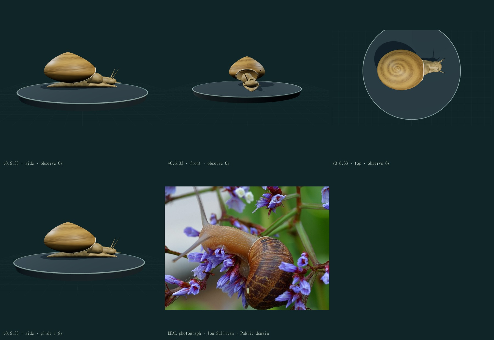
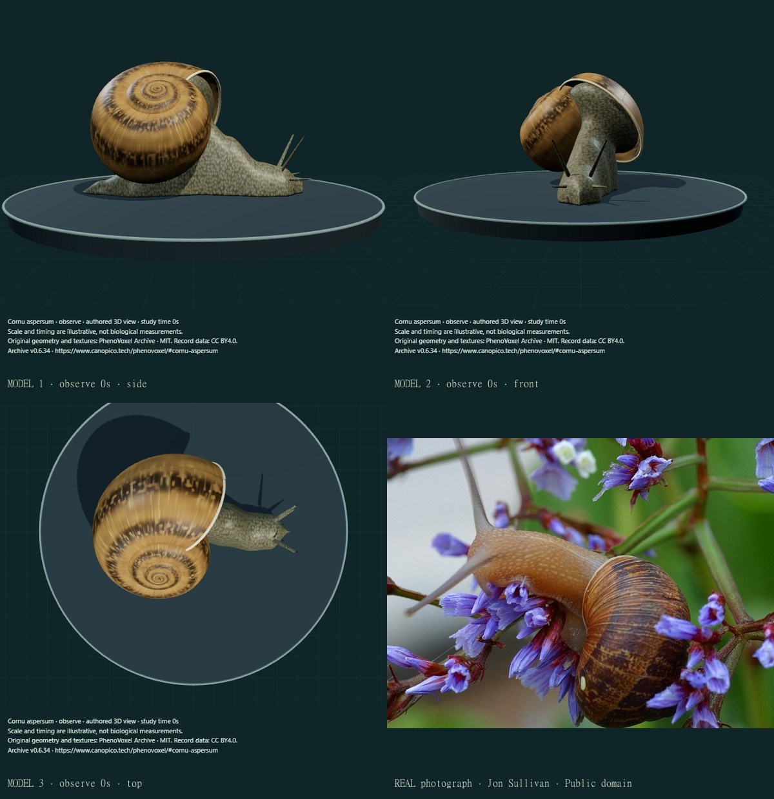
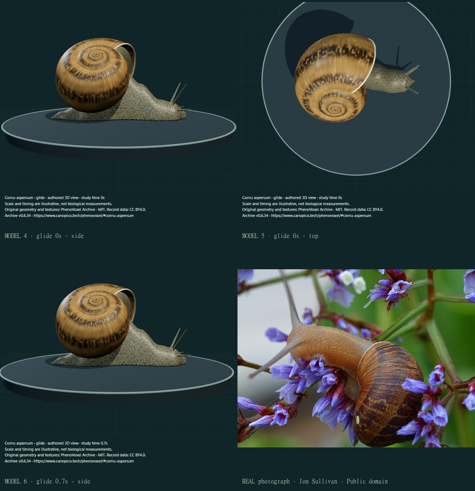
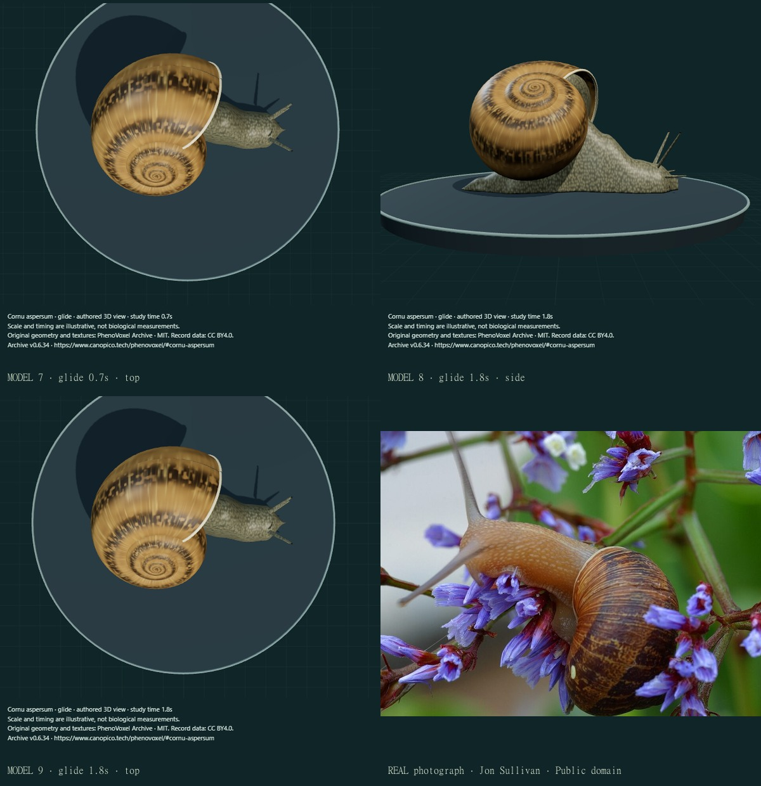
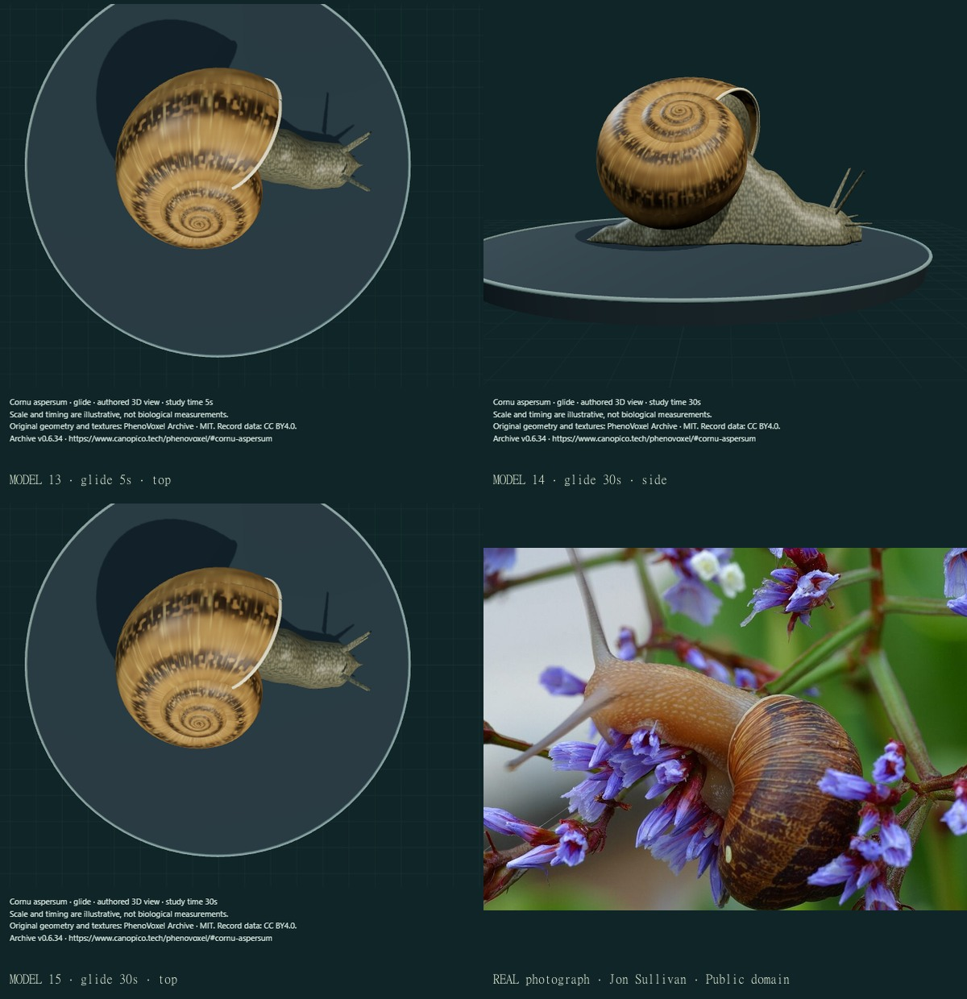
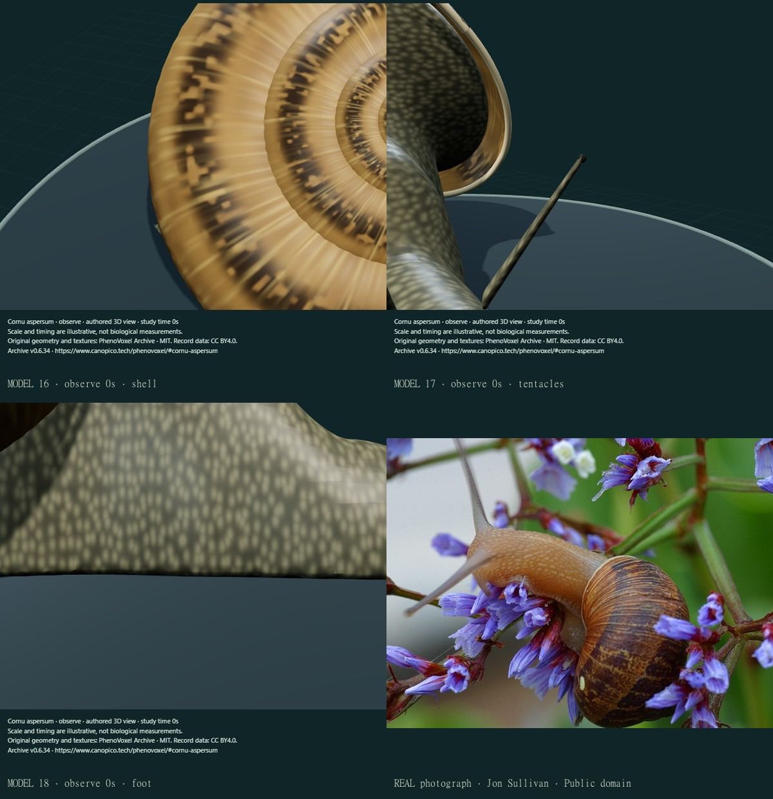

Cornu aspersum · joined adult surface and shell study
v0.6.34 · 18 actual final compiled main-viewer states and 7 credited comparison sheets. One existing record corrected; zero species added.
Comparison is qualitative across different individuals and poses. The authentic reference depicts an animal on vegetation; this authored posture uses a flat display surface. It is not a photographic or kinematic fit.
- Replaced the upright conical envelope with selected rounded swept whorls, an oblique axis, a reflected adult lip and closed protoconch exterior. Internal shell architecture and apposition remain approximate.
- Joined the head, foot and mantle exterior into one connected closed skin mesh and seated its shoulder nearer the aperture. Removed the visible old neck/foot primitive seam.
- Added original irregular pigment and granular skin artwork, four fleshy tapered tentacles and retained terminal eye cues. All texture pixels come from reproducible numerical functions.
- Baked three reusable maps to remove repeated per-mesh numerical texture generation; the viewer waits for those maps before marking the specimen ready.
- Added study-time pause and attributed PNG capture to the archive. Captured images identify a rendered authored view, disclose illustrative scale/time, and retain available artist/source/license credit.
- Retained the same surfaces during the existing finite glide; no unfinished biological mechanism was relabelled available.
This is an unmeasured authored adult reconstruction, not a scan, photorealism certification or independently validated anatomy. Whorl apposition, columella/umbilical closure, shell thickness, aperture/mantle folds, pneumostome, proportions, tissue relief and optical response remain approximate or incomplete. The selected 4.75 turns and 45-degree axis are authored choices within qualitative source comparison, not specimen measurements. Skin/pigment still have numerical regularity and incomplete natural variation, wear and secretions. The existing five-second glide is unchanged: local stalk articulation and bounded body translation, without pedal-wave kinematics, stationary-interwave contact, mucus/traction, feeding or retraction. Default WebGL skin projection is richer than compatibility/GLB UV sampling. No accuracy percentage, expert credential, independent review or physiological simulation is claimed.
Before · v0.6.33

Real photograph: Jon Sullivan / PD Photo.org · public domain. Model images are authored reconstructions, not organism photographs.
Final comparison 1

Real photograph: Jon Sullivan / PD Photo.org · public domain. Model images are authored reconstructions, not organism photographs.
Final comparison 2

Real photograph: Jon Sullivan / PD Photo.org · public domain. Model images are authored reconstructions, not organism photographs.
Final comparison 3

Real photograph: Jon Sullivan / PD Photo.org · public domain. Model images are authored reconstructions, not organism photographs.
Final comparison 4
Real photograph: Jon Sullivan / PD Photo.org · public domain. Model images are authored reconstructions, not organism photographs.
Final comparison 5

Real photograph: Jon Sullivan / PD Photo.org · public domain. Model images are authored reconstructions, not organism photographs.
Final comparison 6

Real photograph: Jon Sullivan / PD Photo.org · public domain. Model images are authored reconstructions, not organism photographs.
Source access and residual uncertainty
The reference is the existing Jon Sullivan public-domain organism photograph. Roy Anderson and R. Forsyth source images were viewed at the identification account but are not redistributed. No photographic pixels or AI-created organism media are used in the new maps.
- Terrestrial Mollusk Tool · Cornu aspersum adult identification
Actual description read:4.5–5 whorls, irregular wrinkled/broken shell pigment, large pale recurved adult lip, normally closed umbilicus and grey/ochre skin with yellow tubercles. Roy Anderson and R. Forsyth source photographs were actually viewed for shell carriage, body union and sensory stalks; their copyrighted pixels are not redistributed or used in the textures. Selected4.75 turns and45-degree axis are illustrative, not measurements.
- Lai et al.2010 · The mechanics of the adhesive locomotion of terrestrial gastropods
PubMed abstract and selected indexed article text were read; the latter names Helix aspersa among the study taxa. Direct publisher PDF first two pages of introductory text were readable, but further page/figure retrieval timed out. No actual motion video, snail-specific figure, trajectory, force data or waveform fit is claimed. Pedal waves and stationary interwaves explain why rigid translation alone remains a partial illustration.
Texture provenance
Original numerical assets and generator: MIT. No photo pixels, AI-created organism photograph or measured tissue map. Exact checksums and encoding. The reference photograph retains its own public-domain grant.
Review boundaries
Earlier private candidates were rejected for detached/upward shells, missing head closure, flat mesh normals and large polygonal skin cells. Initial topology checks then found collapsed faces and a clipped posterior field boundary; the faces and field bounds were corrected without dropping the closed-surface gate. A direct-download event wait in development timed out; capture now presents the actual PNG with attribution and a download link. Detailed page/figure retrieval for Lai2010 timed out after introductory PDF text was readable; no figure/video/trajectory fit is claimed.
Connected/closed mesh, support/reset/provenance/software checks test implementation consistency; they do not validate biological accuracy.
307 public records after verified deployment;243 still missing from 550. Five of 50 new large animals are admitted. The other Mollusca and unfinished movement/development work remain in the queue.